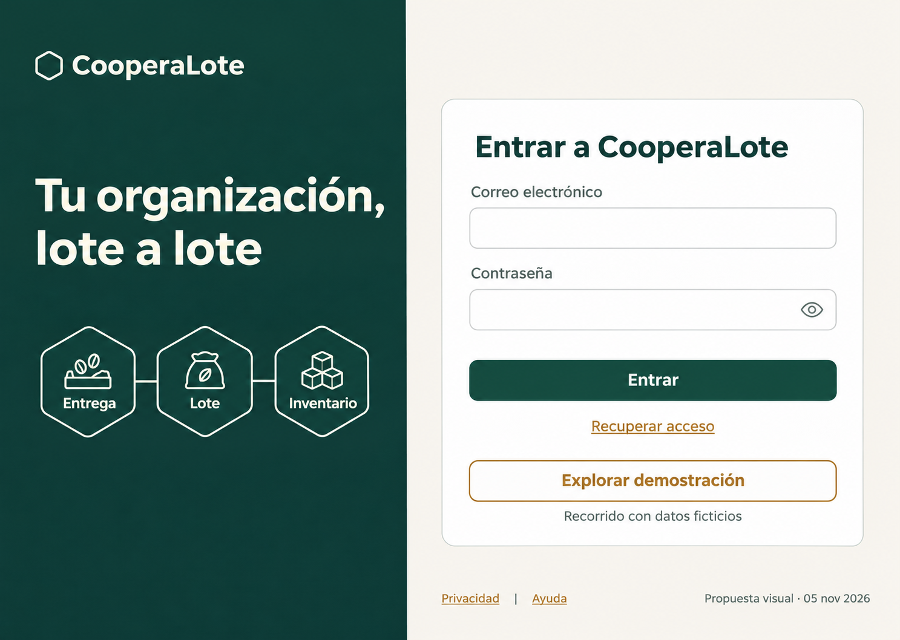

Maquetas estáticas. Abre cualquier imagen para verla a tamaño completo. Los controles dibujados no son interactivos. Caso de referencia: 100 kg recibidos, 20 kg de salida y 80 kg finales. La pantalla de pendientes muestra un escenario alternativo sin conexión.